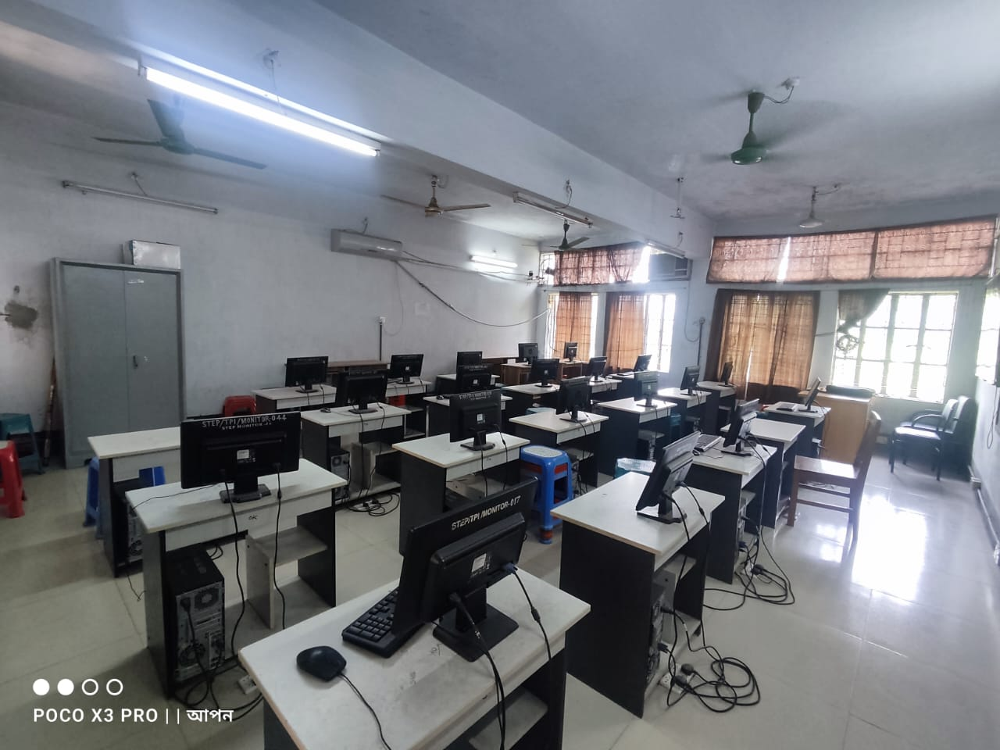
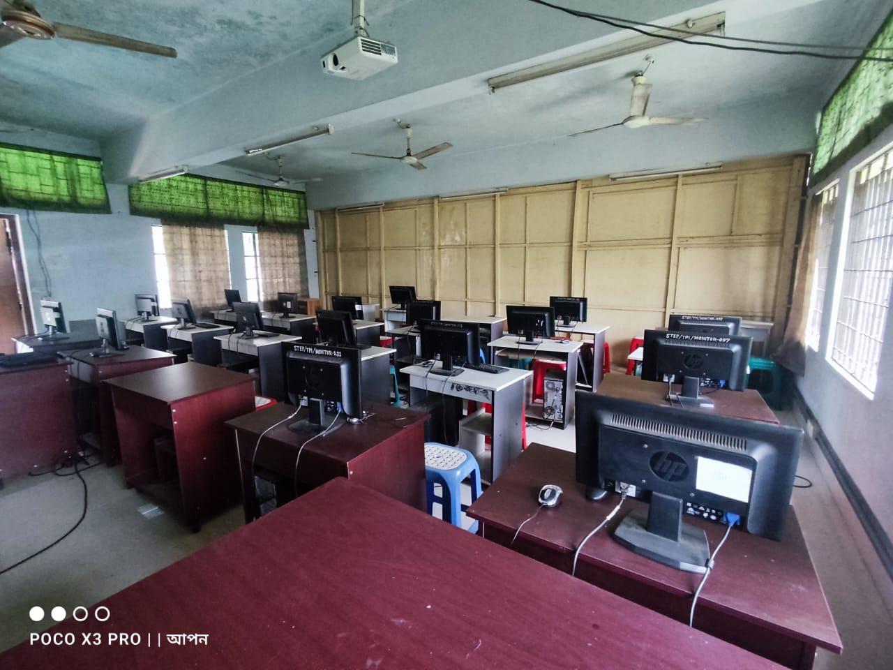
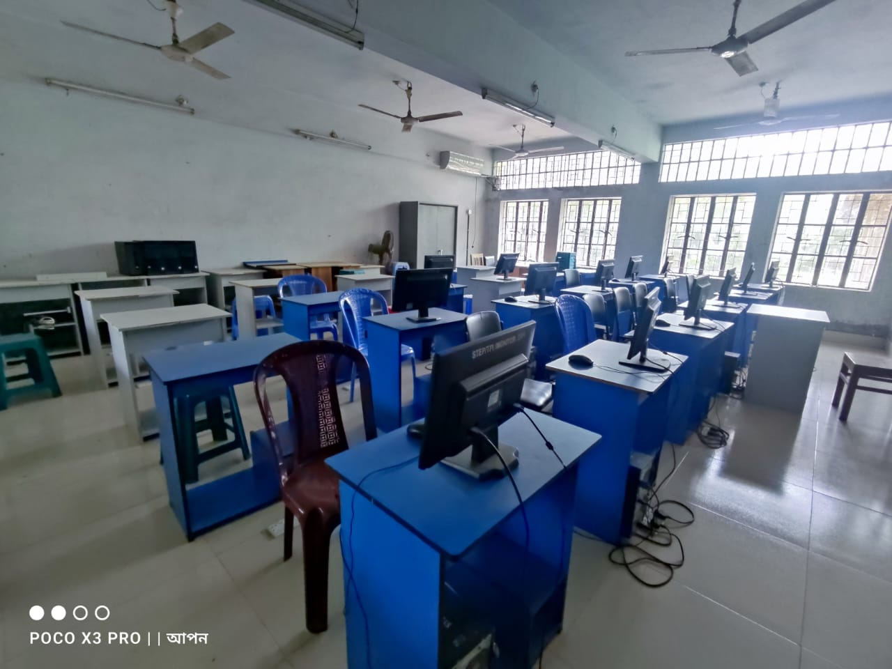
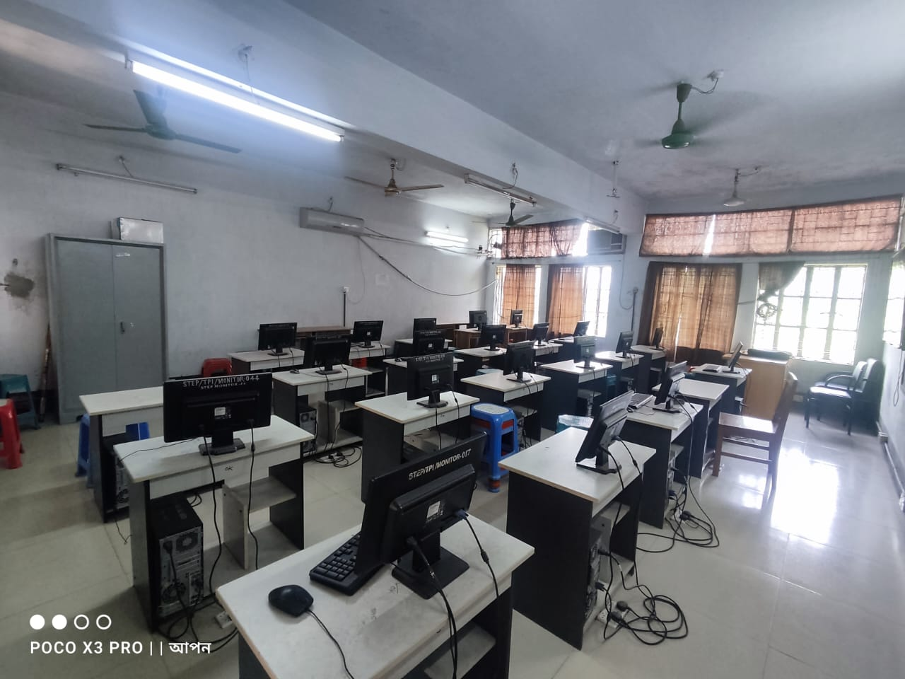
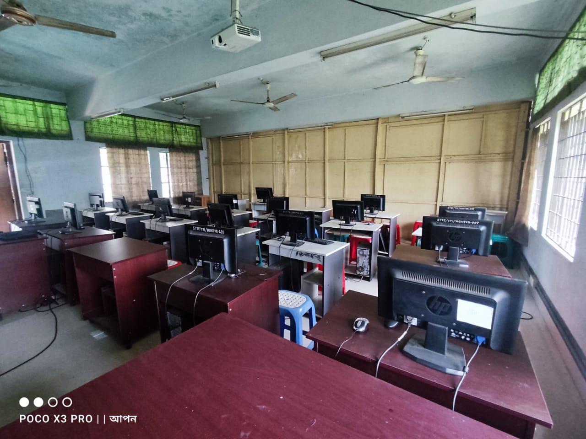
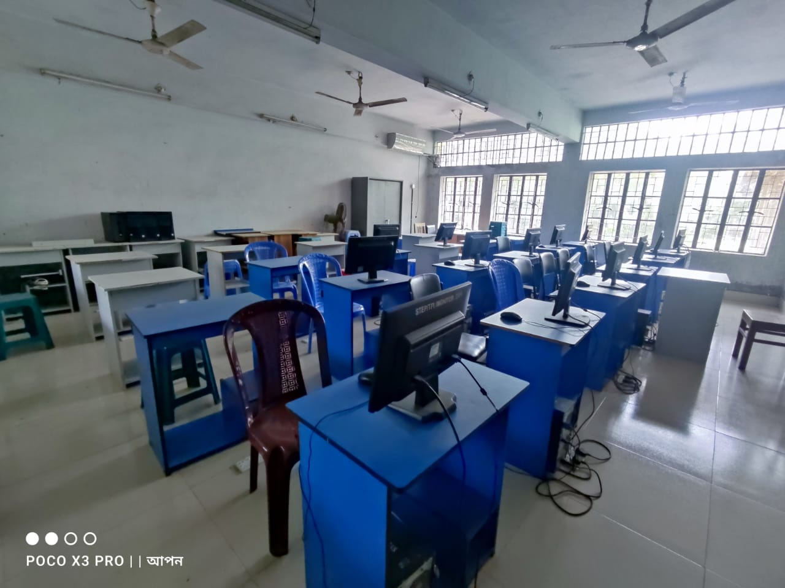
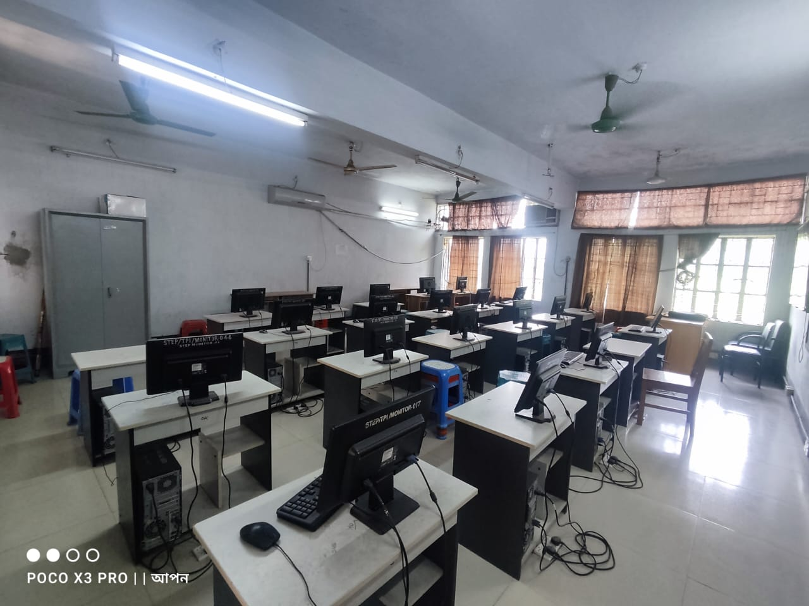
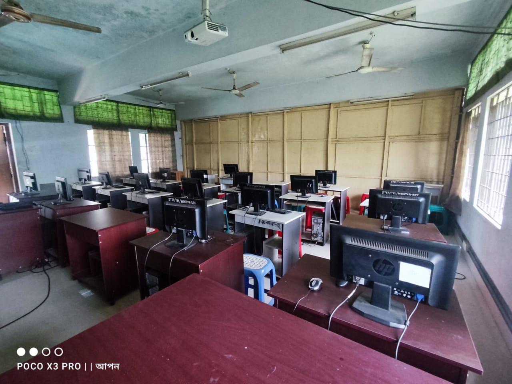
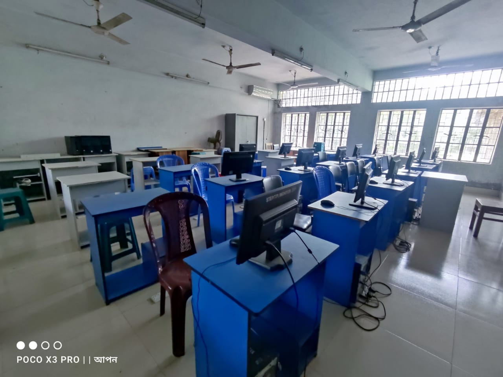

  
   Computer science and technology have revolutionized our world, shaping the way we live, work, and communicate. From the ubiquitous smartphones in our hands to the cloud-powered systems that run our businesses, computers have become an indispensable part of our daily lives.
Computer science is the study of computers and computational systems, encompassing the design, development, and analysis of software and hardware. It encompasses a wide range of disciplines, including algorithms, data structures, artificial intelligence, and computer graphics.
Technology, on the other hand, refers to the practical application of scientific knowledge to create tangible tools, devices, and systems. It encompasses a vast array of fields, from telecommunications and electronics to medicine and biotechnology.
The interplay between computer science and technology has fueled innovation and transformed industries across the globe. The advent of personal computers, the rise of the Internet, and the development of mobile devices have all been driven by advancements in computer science and technology.
These advancements have had a profound impact on society, enabling global communication, providing access to information, and driving economic growth. They have also transformed industries, from healthcare and education to finance and manufacturing.
As computer science and technology continue to evolve, we can expect to see even more transformative advancements in the years to come. These advancements will shape the future of our world, impacting our lives in ways we can only begin to imagine.
Join us at Tangail Polytechnic Institute to embark on a journey of discovery and innovation in the exciting world of computer science and technology!
Tangail Polytechnic Institute's CST department offers two shifts: Morning Shift and Day Shift. Each shift encompasses semesters from 1st to 8th, with the exception of the 8th semester, which is dedicated to industrial training rather than academic coursework. The semester system follows a pair pattern, meaning that when even semesters are running, all departments are focused on even semesters, and when even semesters are complete, the focus shifts to odd semesters. Each semester accommodates hundreds of students, who are divided into two groups for effective management.
Tangail Polytechnic Institute's Computer Science and Technology (CST) department stands out as one of its finest. The department is equipped with all necessary instruments to facilitate students' learning, including computers, projectors, monitors, and other peripherals. The lab classrooms are designed with an eco-friendly approach and are well-suited for students' comfort and productivity. To ensure students have ample opportunities for hands-on practice, the department provides a sufficient number of computers. The friendly and dedicated teachers are committed to guiding students with sincerity and expertise. Additionally, the department boasts a robust internet connection to support students' academic endeavors. The lab teachers consistently strive to maintain the lab in excellent condition, ensuring a conducive learning environment for students. To further enhance security, the department has implemented a comprehensive CCTV surveillance system, covering lab classrooms, theory classrooms, and even corridors. In summary, the CST department at Tangail Polytechnic Institute undoubtedly stands as one of the best departments the institute has to offer. It provides a well-equipped, supportive, and secure learning environment that fosters students' success in the field of Computer Science and Technology.
  